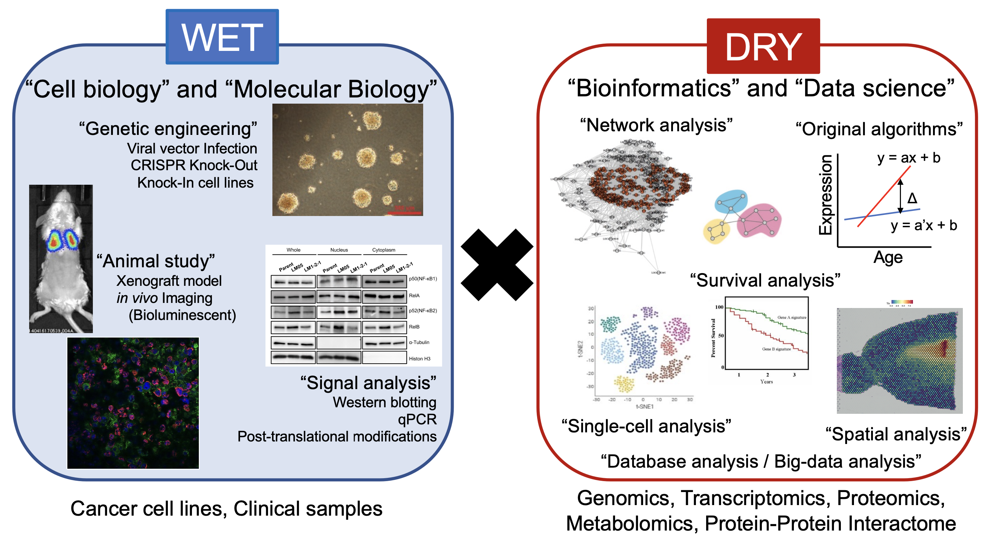
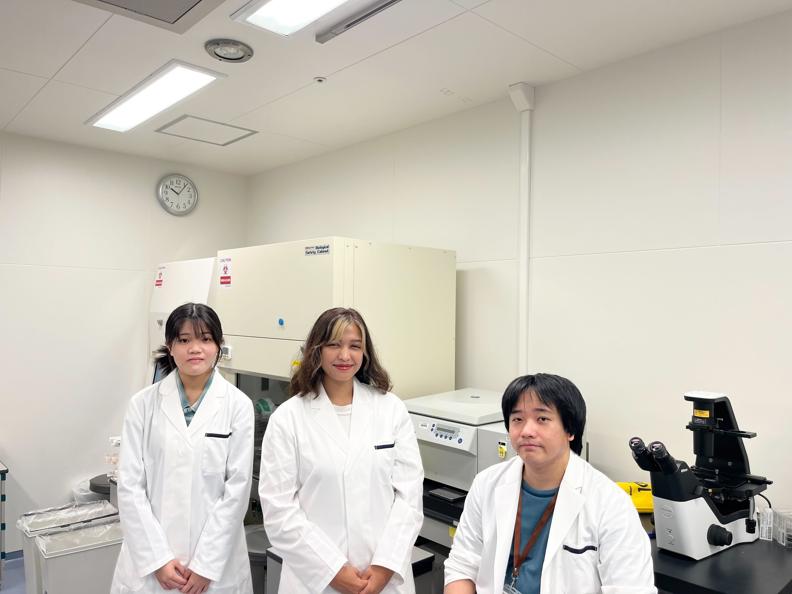

Division of Cell Signaling and Informatics — Nakayama Lab
シグナル伝達・データサイエンス・オミクス解析を融合し、がん転移・休眠・不均一性の分子メカニズムを解明する。WET実験とDRY解析の両輪で、基礎から臨床へつながる研究を推進します。
「どのようながん細胞」が「どの臓器」に「どの遺伝子を利用」して転移し、「どのような細胞」と「どのような情報交換」を行なっているのかを解き明かします。WET実験とDRY解析を組み合わせた独自の研究体制を構築しています。
オリジナルのin vivo selection法で樹立した高転移株やin vitro Dormant assayを用いて、がん転移・休眠の制御遺伝子を同定する。休眠制御（がん休眠療法）や転移治療法の確立を目指しています。
1細胞RNA-seq（scRNA-seq）・空間トランスクリプトーム（Visium等）とオリジナル解析アルゴリズムを活用し、腫瘍内不均一性・転移シグナルを1細胞レベルで解読します。
公共データベースを大規模活用する基盤を構築し、データサイエンス・機械学習で新たな知見を創出します。さらにAIとの融合により医療応用に向けた技術開発も推進しています。

がん転移とは、がん細胞が原発巣から血液・リンパ液・腹水などに播種された後に遠隔臓器に生着し、新たな主要組織を形成しながら増殖する現象です。転移が見つかると、臨床ではステージ4とみなされる段階であり、予後や治療方針に大きな影響を与えます。またがん転移は局所浸潤・血管リンパ管新生・循環系内での生存・遠位臓器への浸潤・微小転移の形成・転移コロニーの形成という複数ステップで成立する非常に複雑な機構です。私達の研究室では、細胞内・細胞外・細胞間のシグナル伝達に着目して、がん細胞がどのようにして転移能を獲得するのかを明らかにすることを目的として研究しています。
がんにおける休眠とは、がん転移の過程や薬剤応答によって引き起こされる現象であり、【1】可逆的なG0期に留まっており【2】代謝状態が落ちている状態で、数カ月から数十年という長い期間その局所に留まっている状態を指します。特に乳がんにおいては、転移先臓器に播種したがん細胞の多くは休眠状態にあり、転移再発の主因である休眠現象の理解と克服が重要な課題の一つです。私達は独自のin vitro Dormant assayを用いて、乳がん細胞における休眠メカニズムの解明と休眠誘導薬の探索を行っています。
現在の生命科学は、オミクス解析の発展に伴って膨大な情報を取り扱う情報科学的側面が強くなっています。私達は特に1細胞レベルの解析に着目して、データ収集および統合解析を行っています。さらに1細胞情報と臨床情報を組み合わせた「1細胞メタ解析」の技術基盤構築にも取り組んでいます。「DRY解析による仮説・モデルの提案」と「WET実験による実証」を実施することが研究体制として確立されています。
金沢大学がん進展制御研究所に着任しました。細胞情報学研究分野にて、がん転移におけるシグナル伝達・オミクス解析を駆使し、転移・休眠の分子機構解明・新規治療法の開発を目指して研究を行っていきます。
慶応義塾大学・東海大学など複数施設の共同研究成果がJournal of Extracellular Vesicles誌に掲載されました。細菌由来EVsの機能解析とがんとの関係性について明らかにしました。Journal of Extracellular Vesicles
愛媛大学プロテオインタラクトーム解析共同研究拠点 2026年度共同利用・共同研究課題に、中山が採択されました。
公益財団法人大阪対がん協会 2025年度がん研究助成奨励金、公益財団法人がん研究振興財団 令和7年度がん研究助成金Ⅰに明果瑠-安岡が採択されました。
2026年度 日本学術振興会科学研究費基金 基盤研究(B)（研究代表者：中山淳）、若手研究（研究代表者：明果瑠-安岡いるま）に採択されました。
関西医科大学 大学院講義・がんプロセミナーにて、中山が発表しました。
国立がん研究センター研究所・東京慈恵会医科大学との共同研究成果がnpj Precision Oncology誌に掲載されました。肺扁平上皮がんと肺腺癌におけるCancer-associated Fibroblasts(CAFs)の多様性について、1細胞メタ解析を用いて明らかにしました。npj Precision Oncology
第25回複雑生命系秩序懇談会定例会にて、中山が発表しました。
関西医科大学との共同研究成果がInternational Journal of Molecular Sciences誌に掲載されました。卵巣がんのanoikis耐性および腹膜播種におけるRNF126の機能について明らかにしました。International Journal of Molecular Sciences
第48回日本分子生物学会にて、明果瑠-安岡、堀口が発表しました。
早稲田大学との共同研究成果がGenes to Cells誌に掲載されました。乳がん細胞におけるTIE1の機能と悪性化機構を明らかにしました。Genes to Cells
第9回転移シグナル若手研究会にて、中山、明果瑠-安岡が発表しました。
サイトオープンしました。
第84回日本癌学会学術総会にて、中山、明果瑠-安岡が発表しました。
2025年文部科学省 学術変革領域研究 学術研究支援基盤形成 先端モデル動物支援プラットフォーム（AdAMS）若手支援技術講習会にて、中山、明果瑠-安岡が発表しました。中山（ベストプレゼンター賞 口頭発表）、明果瑠-安岡（ベストプレゼンター賞 ポスター賞、きっかり3分間トーク賞、ベストディスカッサー賞）を受賞しました！
愛媛大学、名古屋市立大学との共同研究成果がCancer Science誌に2報掲載されました。大腸がんにおけるKLHL5の機能解析と臨床における意義を明らかにしました。Cancer Science
第29回日本がん分子標的治療学会学術集会にて、中山が発表しました。
東北大学との共同執筆した総説がCell Structure and Function誌に掲載されました。STINGバリアントの機能とヒトへの応用についての総説です。Cell Structure and Function
2025年度が始まりました。明果瑠-安岡 いるま（学振PD）と堀口音葉（技術補助員）がグループに加わりました。
第34回日本がん転移学会学術集会・総会にて、中山、明果瑠-安岡が発表しました。
金沢大学がん進展制御研究所 細胞情報学研究分野 准教授
シグナル伝達解析とデータサイエンスを駆使し、がん転移・休眠の分子メカニズム解明と新たな治療法開発を目標に研究を行っています。早稲田大学で博士号取得後、国立がん研究センターにて学振PD・特任研究員として1細胞解析・空間オミクスを駆使した研究を展開。大阪国際がんセンターにて研究員として休眠誘導薬を同定。2026年4月より現職。

大阪国際がんセンター 技術補助員 / 社会人大学院生
秘書 / 技術補助員 / 社会人大学院生
大学院生 募集中 — 詳細はこちら
* = Corresponding Author / † = Contributed Equally
WET実験とDRY解析の両方の技術・能力を身につけ、細胞のやり取りを理解し、がんの克服を目指します。意欲ある大学院生・研究者を随時受け入れています。日本学術振興会特別研究員の申請書作成もサポートします。
アカデミア共同研究・企業共同研究の受け入れも随時行っております。お気軽にご連絡ください。
メールで問い合わせ →〒920-8640 石川県金沢市宝町13-1 金沢大学がん進展制御研究所 細胞情報学研究分野